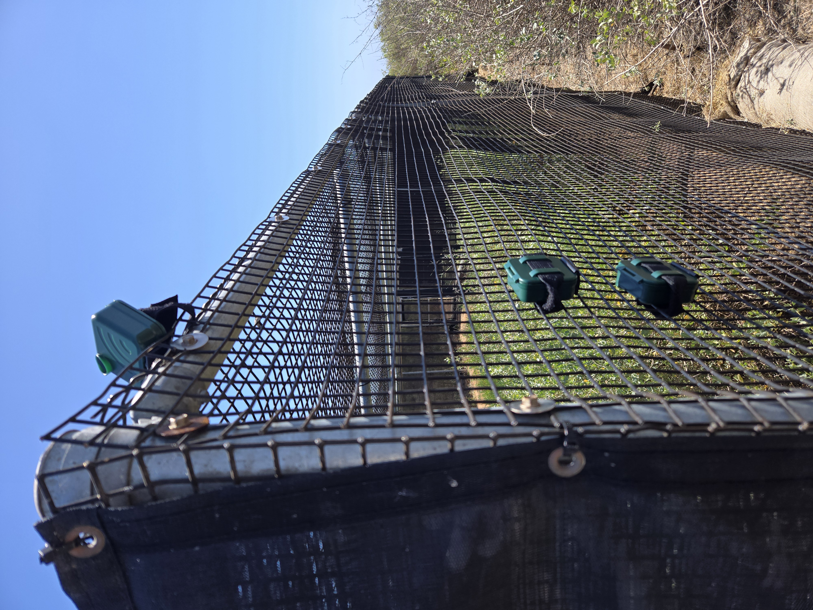
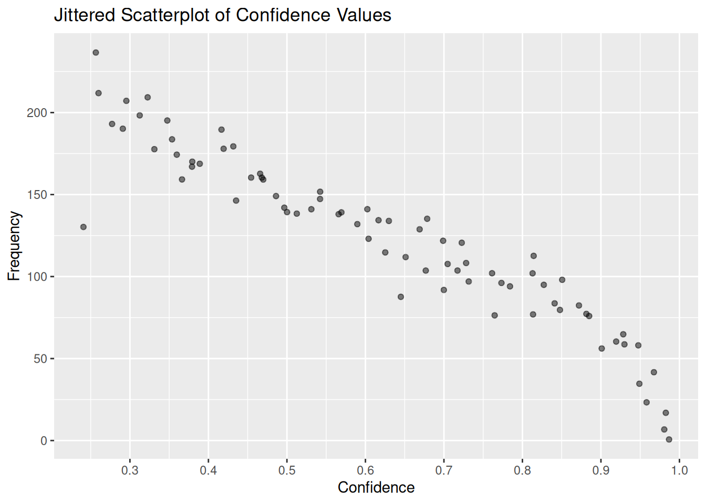

Methods
Please see right-hand sidebar to navigate to specific methods.
Study Area
This pilot study used Audiomoth recorders to monitor a single location in Tijuana River National Estuarine Research Reserve (TRNERR) as well as a series of acoustic experiments at the Ridgway Rail proving pens at the San Diego Bay National Wildlife Refuge near the Living Coast Discovery Center.
By zooming into the markers at the top of the map to see the spatial variation of the recorders at and around the proving pens.
Tijuana Estuary
Recorders were attached to a post situated near a small waterway at the Tijuana River National Estuarine Research Reserve (TRNERR). This site was located near a calling Ridgway’s Rail (calls were heard during our deployment, as identified by Justyn Stahl, Jeff Crooks, and Aiyana Reissman).
Three Audiomoth recorders were attached to allow for three different approaches to sampling (see below for more information). The three recorders were placed vertically along the post and the microphone was directed towards the waterway (the image on the right shows the back of the audiomoths zip-tied to the post).
A Binational Light Footed Ridgway’s Rail Workshop was conducted May 27-29, 2025, with a call-response survey at the Tijuana Estuary ~ 8:30 to 11:30 on Monday May 27. These calls occurred outside the timeframe for either the 48s+s recording configuration (sunrise and sunset), and the continuous recording (48c) ended on May 22.

Sweetwater Proving Pens
The Proving Pens at the Living Coast Discovery Center in the Sweetwater watershed are used for breeding and raising young Ridgway’s Rails to support expanding the population of these endangered species. During this experiment, a breeding pair and their chicks were in Proving Pen #1 (SPP-1N), and a pair (no chicks) were in Proving Pen #3 (SPP-3S). Recordings provided high quality recordings within close proximity to known Ridgway’s Rails, proving voucher (‘ground truth’) data that can be used to improve automated detectors and validate the systems.

At the Living Coast Proving Pens, We used three alternative survey designs:
Sampling Design Test: Set of 3 recorders at each proving pen to provide 3 alternative sampling designs (similar to recorders at Tijuana Estuary), see image on the right
Preliminary Detection Range Test: Single recorder at each proving pen, plus a single recorder posted 118m from SPP-1N and 87m from SPP-3S. This provided a preliminary test to determine the distribution of recorders for the subsequent survey design
Detection Range Test: The final survey design included deployment of a single recorder at SPP-1N and SPP-3S as well as 8 additional recorders deployed in the surrounding region to provide data to estimate detection range of calls attributed to the Ridgway’s Rails in the proving pens.
Deployment Table
The table below includes all audiomoth deployments for the Tijuana Estuary (TJE) and the Sweetwater Proving Pens (SPP), including the exact location (latitude, longitude), deployment and retrieval dates, and the recording configuration. Details on the recording configurations are provided below.
Recorders
Pilot Studies use the low cost Audiomoth Recorder; temporary use of these recorders could be provided at no-cost to the pilot study. Alternatives to the Audiomoth may provide improved recording quality, longer recording durations, multiple recording sensors (for localization), or more complicated sampling options. Ultimately, identification of the most appropriate recording setup will depend on the specific study area and research needs.
Sampling Methods
The initial pilot study included 1 recording site at Tijuana Estuary (TJE), and 2 primary recording sites at the Living Coast Proving Pens (SPP-1N, SPP-3S), and each site had a set of three recorders each with different sampling regimes:
| Recording Type | Recording Schedule | Sampling Rate (kHz) | Record Off (s) | Record On (s) | Filter Type | High Pass Filter (kHz) | Low Pass Filter (kHz) |
|---|---|---|---|---|---|---|---|
| 48c | continuous | 48 | 00.00.05 | 00.00.55 | NA | NA | NA |
| 48s+s | sunriseset | 48 | 00.00.05 | 00.00.55 | NA | NA | NA |
| 192b | bat | 192 | 00.00.05 | 00.00.55 | bandpass | 12 | 96 |
Each recording configuration provided valuable information to inform future studies:
48 kHz Continuous Recording: Continuous recordings provide additional context to activities during the day and night with a trade-off between storage capacity.
48 kHz Sunrise and Sunset: Previous research suggests that Ridgway’s Rails are most vocally active during sunrise and sunset, and this more limited recording configuration allowed the recording duration to be extended. The limited recording period has reduced context, especially related to anthropogenic impacts and potential prey activity.
192 kHz Sunset to Sunrise (bat): This high frequency recording allows for detection of bat echolocation. While bat species were not the primary focus of this pilot study, they are an important species in wetland habitats and provide valuable information related to biodiversity and health of the ecosystem. Due to the high sample rate, these recordings were storage limited and of shorter duration.
Analysis Methods
Bird Detection and Classification
Data were first scanned to determine the appropriate Recording Start and Recording End, as the beginning of most recordings contained excessive noise.
Birdnet Analyzer v2.4 was used to batch analyze recordings for each deployment; detections were saved as csv files and formatted as Raven selection tables. Settings include: Minimum confidence = .25, Sensitivity = 1, Overlap = 0, Merge consecutive detections = 1, Audio speed modification = 1, minimum bandpass = 0 Hz, Maximum bandpass = 15 kHz; species list based on location (33N, -117W) and year-round with minimum occurrence probability of 0.03 for a species to be included.
Birdnet provides a confidence score associated with each detection based on the original model development (not this specific dataset). These scores are not probabilities but do positively relate to predication accuracy (though this relationship varies by species). Manual validation was not conducted on these results, but this validation is required to translate these scores to a predication accuracy.
##Note: All results are preliminary, data were not acoustically validated!

Preliminary data were analyzed using R programming language and preliminary results are provided to assess the potential use of PAM for studying Ridgway’s Rails. Preliminary data products and R code are made publicly available in this repository.
_code/01_modifyNewDataInPlace.Rmd
_code/02ravenValidate.Rmd
_code/03ingestData.Rmd
_code/04_Distance.Rmd (Under Construction)
Distance Sampling
A subset of data from the Detection Range Test at the Sweetwater Proving Pens was examined to provide a preliminary estimate the detection range of Ridgway’s Rails calls from the semi-captive animals in the proving pens. This sample detection data was analyzed using the distance R package to develop a (preliminary) detection function. This data provides an initial assessment of the detection range to inform future studies.
Manual validation of the data was not completed but is necessary to ensure accuracy of the detection function. The proving pens and surrounding habitat are different than the natural wetland habitat of Ridway’s Rails, and this detection function may vary from natural habitats. That said, we do believe this may serve as an approximation for natural habitats. Consideration of these limitations should be made prior to implementing a proper distance sampling survey.
Bat Detection and Classification
Bats produce high frequency echolocation for communication, navigation, and foraging. Detection of these sounds requires a high sampling rate, which in turn has high storage requirements. High frequency sampling was conducted at both sites (Tijuana Estuary and the Sweetwater Proving Pens), although recordings were shorter in duration.
High-frequency (192 kHz) recordings were analyzed using a trial evaluation of Kaleidoscope Pro software to detect echolocation clicks from bat species using the Western North America catalog. Again, manual analysis was not conducted to evaluate the classifier performance, and all results are preliminary. To reduce the number of potentially false detections, all potential bat detections were filtered to eliminate detections with less than 10 echolocation clicks, with a high variability in species detections within events, and with species detections with low classification probabilities. While this approach likely reduces the number of false detections and inaccurate classifications, it should be considered preliminary until a thorough manual evaluation of the data can be conducted.
Note: Bat analysis was not completed
Biodiversity Analysis
TBD
Soundscape Analysis
TBD